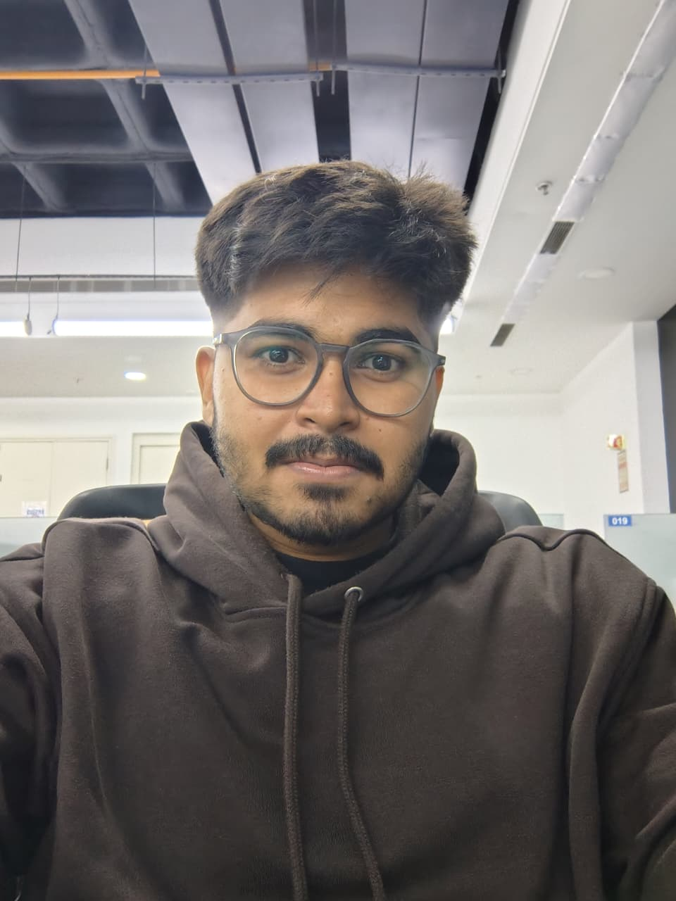

SOFTWARE ENGINEER / 01
Harsh Vikram
Tey.
Associate Software Engineer
Python · Django · Backend · AI / GenAI
Bangalore, India
Building backend systems, APIs, data workflows, and intelligent applications.
OPEN TO NEW OPPORTUNITIES

ENGINEERING PROFILEHVT—01

CURRENT FOCUSBackend engineering + AI
↗01 build(reliable_systems)_
PROFILE / 02
A PRACTICAL ENGINEERING MINDSETReliable by design.
Curious by nature.
Software Engineer with 2 years of experience building production web applications, REST APIs, and data-processing systems. I work primarily with Python, Django, and SQL, and have been building AI workflows with retrieval, embeddings, and vector search.
My focus is on clear service boundaries, useful automation, and software that stays maintainable as it grows.
EDUCATIONB.E. · VTU
CGPA9.1 / 10
LOCATIONBangalore, India
EXPERIENCE / 03
ALTEN INDIA · ROLE PROGRESSIONA.
ALTEN India
BANGALORE, INDIAAssociate Software Engineer
PROMOTEDCURRENT ROLE
Working on a Rolls-Royce project, supporting internal web applications through Python and Django backend development, API development and integration, and data workflows.
Improved reporting efficiency with interactive Power BI dashboards.
OPERATIONAL REPORTINGReduced data-processing runtime through Pandas automation.
DATA WORKFLOWS+
Developed and maintained Django REST APIs backed by PostgreSQL, including CRUD operations, validation, serializers, bug fixes, and refactoring.
+
Contributed to data migration, processing, and transformation, and worked with stakeholders to translate requirements into backend modules and workflows.
 PYTHON
PYTHON DJANGODJANGO REST FRAMEWORK
DJANGODJANGO REST FRAMEWORK POSTGRESQL
POSTGRESQL PANDAS
PANDAS POWER BI
POWER BI AZURE DEVOPS
AZURE DEVOPS SELECTED PROJECTS / 04
BUILT WITH INTENTSystems with a
reason to exist.
Two explorations in building useful products with backend engineering and applied AI.
PROJECT / 012026
ForgeDev
An engineering knowledge workspace for semantic search and grounded answers.
Designed to bring engineering knowledge from multiple sources into one place, ForgeDev lets developers search technical content in natural language and get answers grounded in retrieved, project-specific context.
MY CONTRIBUTION Built the end-to-end RAG pipeline: document chunking, Hugging Face embeddings, FAISS indexing, similarity search, and context assembly. Designed REST APIs, PostgreSQL data models, and service boundaries for authentication, document management, and asynchronous AI workflows, then containerized the multi-service application with Docker Compose.
PRIMARY PRODUCT GOALS06 ＋
- 01Centralize engineering knowledge from multiple sources.
- 02Enable natural-language semantic search beyond exact keyword matches.
- 03Ground answers in retrieved, project-specific knowledge.
- 04Reduce time spent searching docs, learning codebases, and rebuilding architectural context.
- 05Support extensible agents that use tools, retrieve information, and handle multi-step workflows.
- 06Preserve decisions, technical documentation, and engineering history for reuse.
PYTHONDJANGO FASTAPIPOSTGRESQLRAG
FASTAPIPOSTGRESQLRAG LANGCHAINLANGGRAPH
LANGCHAINLANGGRAPH HUGGING FACEFAISS
HUGGING FACEFAISS DOCKER
DOCKERENGINEERING KNOWLEDGEBUILT 2026
PROJECT / 022025—26
PrepJob-AI
Role-specific interview practice with AI-generated feedback.
PrepJob-AI creates dynamic mock interview questions for a target role and evaluates responses, giving candidates a structured way to practice.
MY CONTRIBUTION Integrated LangChain and the Gemini API to generate questions and evaluate responses. Used Hugging Face models for sentiment and answer analysis, and implemented Django REST Framework services for user sessions and interview tracking.
PYTHONDJANGODJANGO RESTLANGCHAINHUGGING FACEGEMINI APIINTERVIEW PREPARATIONBUILT 2025—26
AI LAB / 05
APPLIED AI · RETRIEVAL · GENERATIONEngineering knowledge,
made useful.
ForgeDev is designed to bring engineering knowledge together, make it searchable in natural language, and ground answers in retrieved project context. Its goals also include preserving technical history and supporting agent workflows that can use tools across multiple steps.
Explore ForgeDev goals ↗FORGEDEV / AI WORKFLOW RETRIEVAL + AGENTS
01IngestSOURCES
02EmbedVECTORS
03SearchSEMANTIC
04GroundPROJECT CONTEXT
05AgentsLANGGRAPH / TOOLS
TOOLKIT / 06
TOOLS USED TO SHIPA focused
working set.
Technologies used across professional work and personal projects. Hover an item for its name; all labels remain visible.
BACKENDPythonDjangoDRFFastAPI
PythonDjangoDRFFastAPIDATA
SQLPostgreSQL SQL Server
SQL Server RedisPandas
RedisPandas NumPyOpenPyXLPower BI
NumPyOpenPyXLPower BI
PostgreSQLSQL ServerRedisPandasNumPyOpenPyXLPower BIFRONTEND HTML
HTML CSS
CSS JavaScript
JavaScript
HTMLCSSJavaScriptAI / GENAILangChainLangGraphHugging FaceRAGEmbeddingsFAISSGemini API
LangChainLangGraphHugging FaceRAGEmbeddingsFAISSGemini APITOOLS / DEVOPS GitAzure DevOpsDocker
GitAzure DevOpsDocker Kubernetes
Kubernetes Postman
Postman VS Code
VS Code
GitAzure DevOpsDockerKubernetesPostmanVS CodeCERTIFIED · 2026
Fundamentals of AI Agents Using RAG and LangChain IBM · Coursera
Building Generative AI-Powered Applications with Python IBM · Coursera
CONTACT / 07
OPEN TO NEW OPPORTUNITIES
Let’s build
what’s next.
I’m currently open to new opportunities. Reach me by email or connect with me online.
vtharsh123@gmail.com ↗